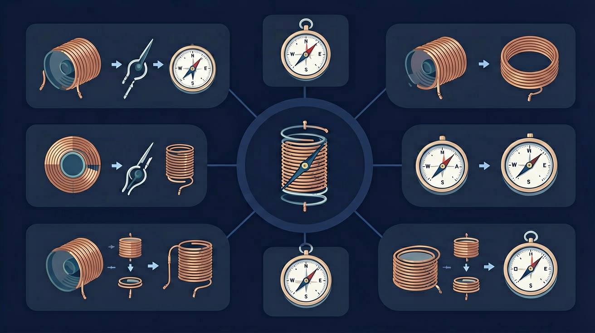
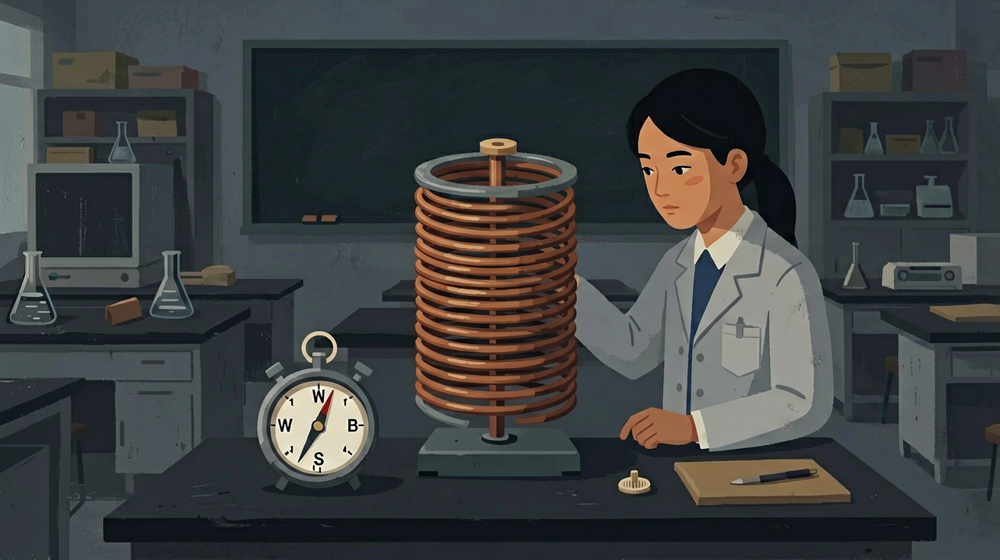
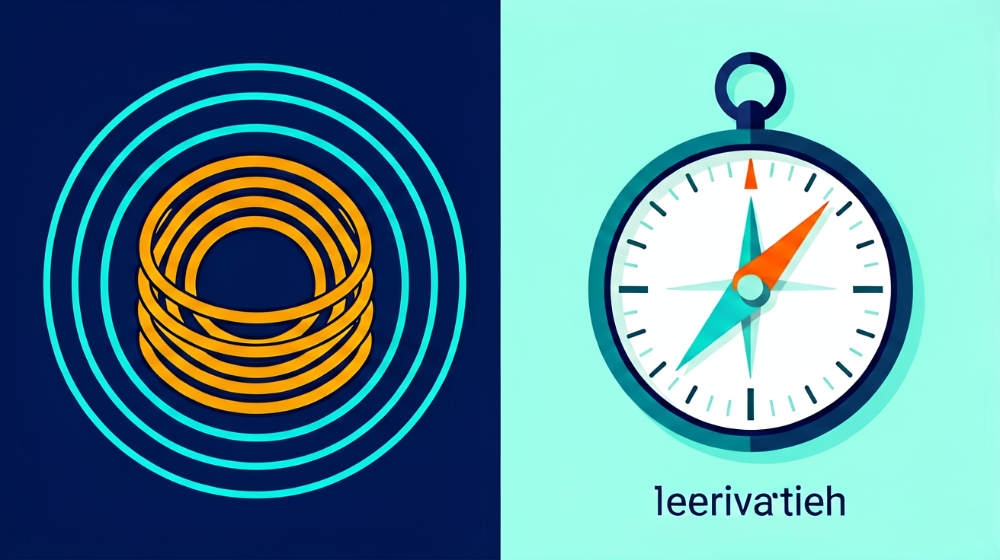

🎯 能说出电流磁效应的发现者及基本现象
🎯 能判断影响电磁铁磁性强弱的三个因素
🎯 能分析实验数据得出电流与磁场强度的关系
❓ 为什么通电导线能让小磁针偏转？
❓ 电流越大磁力就越强吗？
❓ 电磁铁和普通磁铁有什么区别？
学完这一课，这些问题你都能自信地回答。
And：学生知道磁铁能吸铁
But：不明白通电导线为何让小磁针偏转
Therefore：建立电与磁的关联认知
通电导线周围存在看不见的磁场，就像磁铁周围一样。这个磁场会使附近的小磁针发生偏转，比如用1节干电池（1.5V）连接30cm导线，小磁针会偏转15°左右。电流越大（如换成3V电池），偏转角度会增大到30°，说明磁场强弱与电流大小有关。
🌍 家庭电路短路时，跳闸前电线周围会产生强磁场，若此时附近有指南针，能看到指针剧烈抖动。
用2节电池串联供电时，小磁针偏转角度会？
奥斯特实验表明：电流能产生磁场。通电螺线管的磁场类似条形磁铁，可用安培定则判断方向。
知道磁铁有磁性。
以为只有磁铁有磁场；螺线管方向判断错。
奥斯特→电流磁场→螺线管→安培定则。
设计实验探究电流大小和线圈匝数对电磁铁磁性强弱的影响。
电流周围有磁场
类似条形磁铁
判断磁场方向

奥斯特实验发现通电导线周围存在磁场，说明电流具有磁效应，揭示了电与磁的联系。通电螺线管外部磁场与条形磁体相似，其极性可用安培定则判断：右手握住螺线管，四指指向电流方向，大拇指所指的那端就是 N 极。电磁铁的磁性强弱与电流大小、线圈匝数和有无铁芯有关。
判断螺线管极性先看电流从哪端流入线圈；要增强电磁铁磁性，可增大电流、增加匝数或插入铁芯，这三条常作为控制变量实验的自变量。
常见误区：常见误区是用左手判断螺线管极性，或认为断电后电磁铁仍有强磁性。
奥斯特实验说明？
要使电磁铁磁性增强，下列做法无效的是？
勾选你已掌握的条目。
And：学生已观察磁针偏转现象
But：不知道如何量化磁场强弱
Therefore：引入可测变量建立科学规律
用线圈代替直导线能增强磁场，比如绕10圈的线圈通1A电流时，磁针偏转45°；增加到20圈（其他条件不变）会偏转60°。这里‘线圈匝数’和‘电流大小’就是可测变量。实验中可用传感器测量磁场强度（如50mT），发现它与电流（A）和匝数成正比。
🌍 电动车充电器里线圈嗡嗡声就是电流磁效应，充电电流越大声音越响。
要使磁场增强50%，可以？
And：学生知道变量影响磁场
But：不会综合调控多个参数
Therefore：培养工程思维解决实际问题
电磁铁磁性强弱由电流、匝数和铁芯共同决定。例如：用5V电源，20匝线圈空载时吸起3枚回形针；插入铁芯后能吸起8枚；若保持铁芯同时增加匝数到40匝，能吸起15枚。实际应用中（如门禁电磁锁）会综合调节这些参数。
🌍 废旧电器拆出的电磁铁，改造后可做冰箱门报警器。
哪种改造能提升电磁铁吸力？
先独立作答，再点选项查看对错与错因。
在探究电磁铁磁性强弱的实验中，以下哪个因素不会影响实验结果？
在电磁铁实验中，如果保持线圈匝数不变，增加电池数量，电磁铁的磁性会如何变化？
在电磁铁实验中，如果保持电流不变，增加线圈匝数，电磁铁的磁性会如何变化？
在电磁铁实验中，保持线圈匝数不变，增加电池数量，电磁铁的磁性会____。
答案：增强
增加电池数量会增加电流，从而增强电磁铁的磁性。
在电磁铁实验中，保持电流不变，增加线圈匝数，电磁铁的磁性会____。
增加线圈匝数会增强电磁铁的磁性。
（中考题）如图通电螺线管旁小磁针静止时N极指向左，则电源（ ）
（迁移题）电梯紧急制动装置利用电流磁效应，断电时（ ）
（实验题）要研究电流大小对磁场影响，应控制（ ）

增强电磁铁磁性可
电流反向则螺线管
✅ 演示断电后铁钉掉落现象
💡 混淆电磁铁与永磁体特性
✅ 强调'右手握导线，拇指电流走'
💡 左右手定则混淆
口诀：电生磁，安培判，右手握住电流转
类比：电流像水流，磁场像水流产生的漩涡
💡 观察磁与电的联系，辅助理解电流的磁效应。
外链：https://phet.colorado.edu/sims/html/faradays-law/latest/faradays-law_zh_CN.html
通电导线周围
通电螺线管磁场像
电磁起重机利用
用三句话说明电流磁效应最重要的一条规律，并举一例。